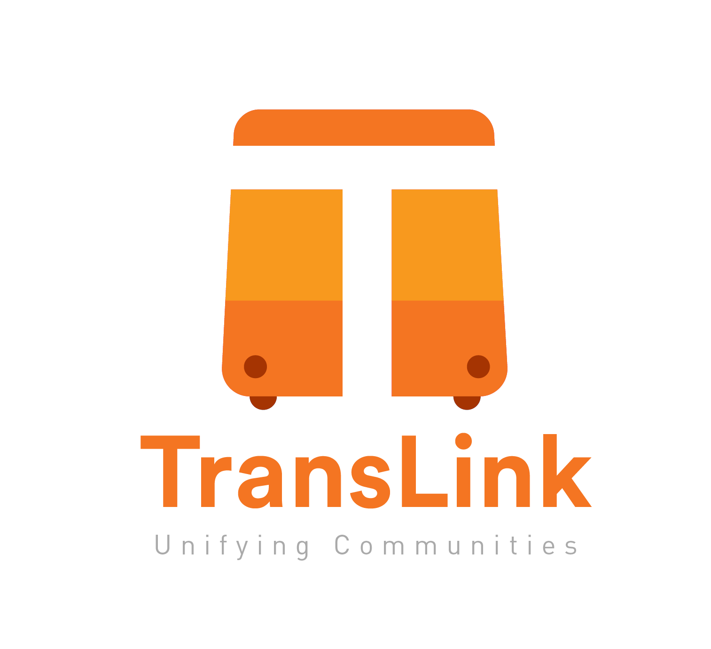
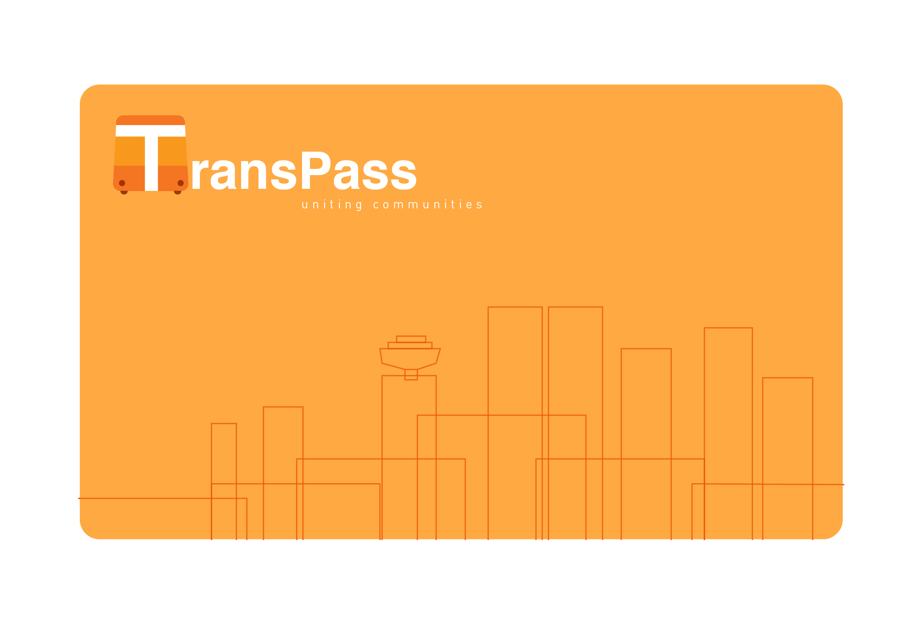

The goal of this project is to rebrand Translink, Metro Vancouver’s regional transportation authority. We were instructed to modify the existing brand and its assets to better represent and make visible its services to the communities in which it operates. Developing two brand components: 1) a new logo which is suitable in both small and large applications—on letterhead all the way to buses/trains—and 2) a compass card design.
In order to begin redesigning, I needed to be aware of all Translink's products and services. Researching the company and understanding its current brand and what it could be.
Considering the improvments Translink is experiencing currently, I wanted to focus more on the Translink experience as a whole, in conjunction with what is already planned. The slogan represents the overall theme of a revamped Translink. Which is to unify the communities throughout greater Vancouver, not only through the purpose of transit, but as a community itself. To create such communities, we will establish facilities throughout the Greater Vancouver transit stations. These Transit Hub’s will focus on it’s accessibility providing tactical flooring, easy access ramps, elevators, and Braille plates for travelers with disabilities. The transit hub will consist of public washrooms, shops, banks and takeaway food.food outlets inside the stations or steps away from the exits. The new Translink card will act not only as fare card for the transit systems, but will also provide the ability to make transactions within facilities in the Transit Hub. The prupose of the Transit Hub is to create a sense of community throughout your Translink experience.
The color pallet will consist of different shades of orange—a combination of the energy of the color red, and the happiness of yellow. The Transit Hubs, Buses, and stations will consits of these particular colors. In an area that never stops to rain, in addition to the detestation we have towards commuting, the color orange will literally make our days seem a bit brighter; as it is associated with joy, sunshine, and of course, the tropics.
A function that reduces cognitive overhead by putting relevant information side by side so that the person using Yelp can efficiently make a decision between a limited amount of options.
Through inspiration of visual systems, the design rationale of the redesigned Translink logo was to create a universal logo that is able to be interpreted with ease by the residence and visitors of the Greater Vancouver. The new logo consists of a simple illustration of a bus icon, with a “T” cleverly placed in front, that is easily recognizable, and also familiar as it already represents transit posts throughout Vancouver. The logo caters to the everyday users of Vancouver transit, and also the new community of people from various countries that arrive in Vancouver everyday. The utilization of the sans-serif fonts “Futura PT Heavy” as the header and “DINPro-Regular” as a sub-header, allows for clear legibility to everybody that sees the logo.
The stated color palette of a warm orange that is utilized within the logo, carries on to the new Translink card. The brightness of the orange allows for easy distinction amongst the many cards that a commuter may hold. Incorporating a illustration of the downtown Vancouver skyline.
